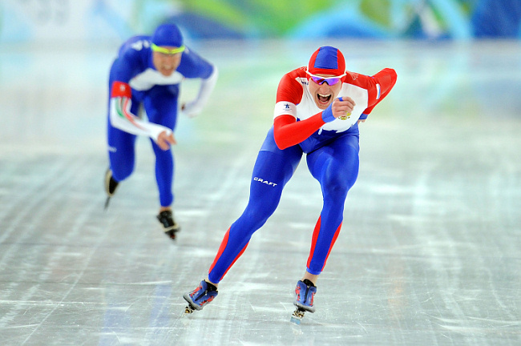
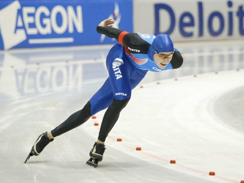
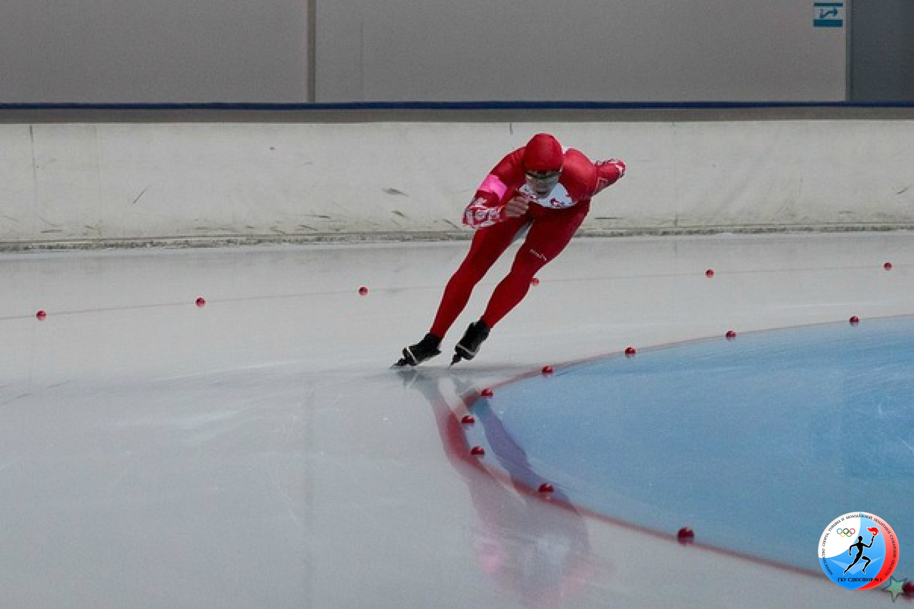
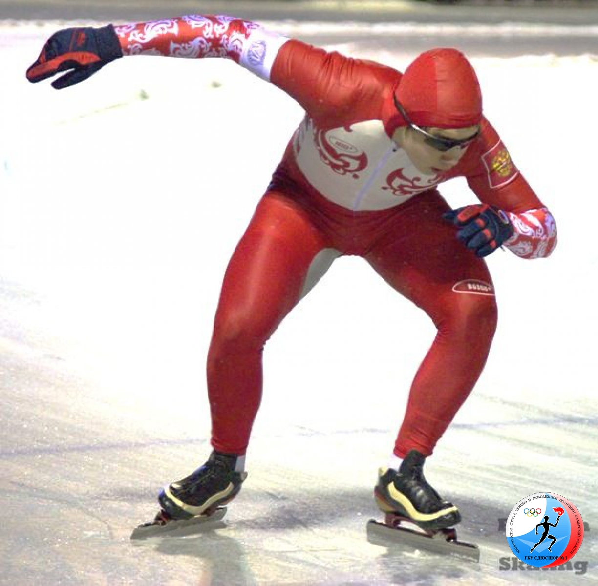
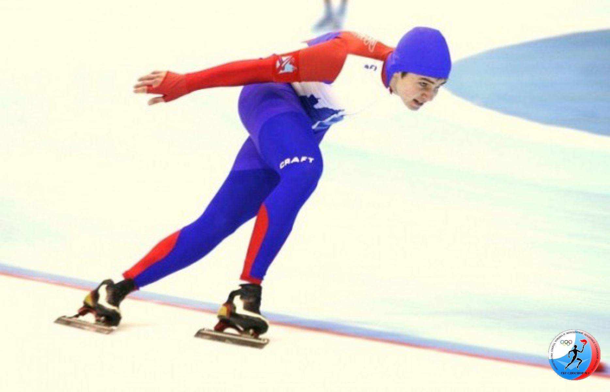

Конькобежный спорт
Если вы хоть раз в жизни стояли на коньках, то знаете, как трудно дается эта премудрость – рассекать по льду, стоя на заточенных металлических скобах. А теперь представьте себя на месте хоккеиста или фигуриста – слабо? Между тем, многие занимаются коньками с детства и достигают значительных успехов.
Кто-то действительно идет в хоккей или фигурное катание, а кому-то достаточно просто бега на коньках. Тем более что и этот спорт достаточно популярен. В том числе и в России. И, разумеется, соревнования по конькобежному спорту давно включены в олимпийскую программу. Любители спорта смогут оценить состязания бегунов в Сочи этой зимой.
Сейчас, когда коньки есть практически у каждого, мало кто задумывается об истории. А ведь конькобежный спорт – один из древнейших видов спорта в мире. Археологи находили множество предметов, которые, несомненно, когда-то были коньками – самой древней находке более 3000 лет. Впрочем, с момента появления коньков до применения их в спорте прошло очень-очень много времени. Первые официально зарегистрированные состязания по конькобежному спорту состоялись лишь в XVIII веке в Великобритании. История донесла до нас имя первого победителя – им стал некто по фамилии Лэмб, пробежавший 15 миль (24 километра) за 46 минут. Весьма неплохой результат для того времени. Мировой рекордсмен 2007 года Свен Крамер осилил бы такое расстояние за полчаса.
Интересный факт
Первые коньки представляли из себя кости животных, привязанные к ногам. Такие коньки находят археологи на стоянках древних людей.
После проведения первых соревнований потребовалось больше столетия, чтобы состоялся первый чемпионат мира по бегу на коньках – он прошел в 1889 году в Нидерландах. И здесь берет гордость: первым чемпионом мира по конькобежному спорту стал россиянин Александр Паншин, которому на тот момент было 38 лет. Уникальный был человек: после завершения карьеры конькобежца он стал фигуристом и тоже добился больших успехов. Но это отдельная история.
После исторической победы Паншина прошло несколько лет, и барон Пьер де Кубертен принял решение возродить античные состязания – Олимпийские игры. Только на рубеже веков они приняли уже другие масштабы. Первая зимняя Олимпиада прошла в 1924 году, и в программу соревнований уже тогда был включен бег на коньках. Правда, только среди мужчин. Женские забеги появились в программе Олимпийских игр в 1960 году.
Советские конькобежцы впервые появились на зимней Олимпиаде в 1956 году и сходу завоевали семь медалей разного достоинства. А всего восемь лет спустя на Олимпиаде в Инсбруке был установлен рекорд, который держится до сих пор и который является, пожалуй, главным достижением отечественного конькобежного спорта: Лидия Скобликова стала победительницей на всех четырех дистанциях и, таким образом, оказалась единственной в мире 6-кратной олимпийской чемпионкой в истории.
Спустя 50 лет российские конькобежцы выйдут на лед в Сочи. Иван Скобрев, Артем Кузнецов, Евгения Дмитриева – сильнейшие российские спортсмены, которые будут бороться за золото Олимпиады.
{kind=link}
{kind=link}
{kind=link}
{kind=link}
{kind=link}